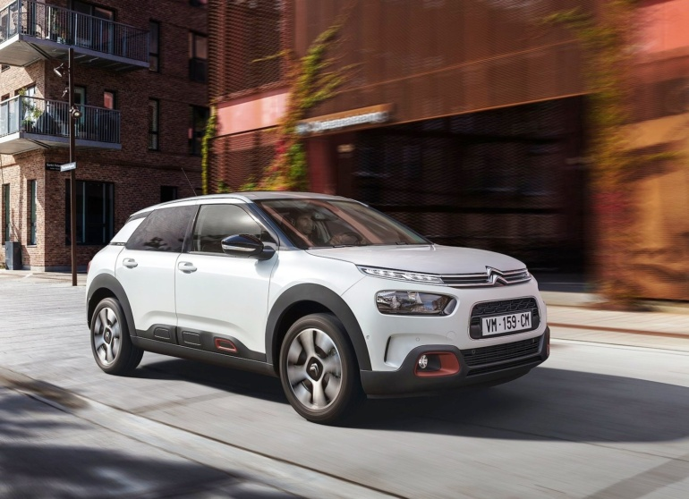
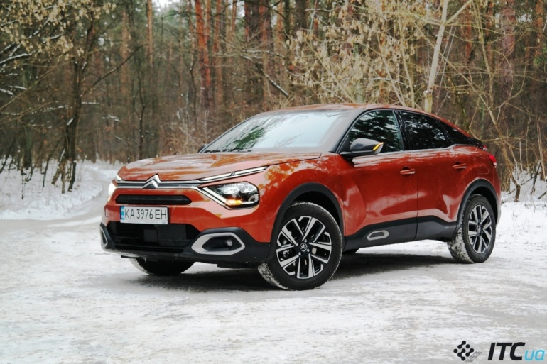
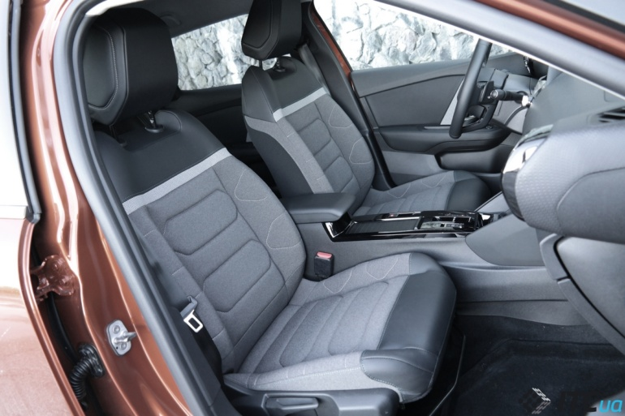
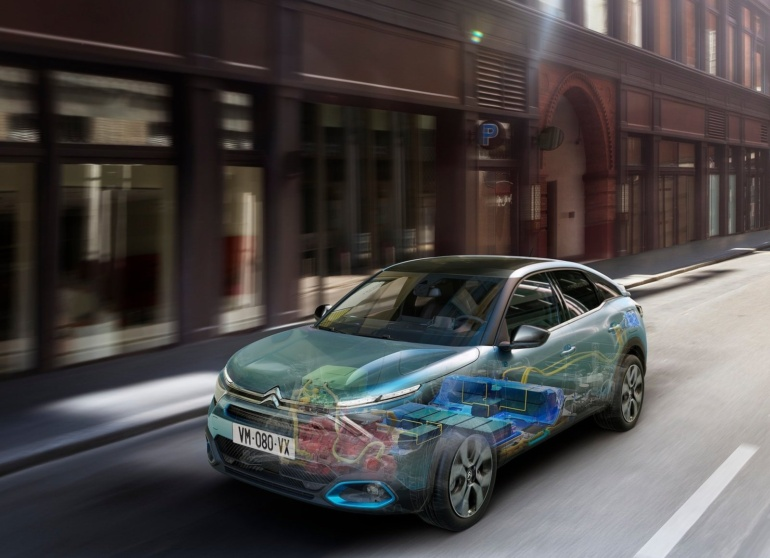

Позиционирование Citroen C4
Но для позиционирования и понимания нынешнего автомобиля Citroen C4, нам необходимо вспомнить лишь автомобили Citroen 2000-2010х годов. Итак, в начале 2000х годов выходит Citroen C4 – традиционный автомобиль С-класса, который предлагался в двух кузовах: 5-дверный семейный хэтчбек со спокойным обликом или динамичная подтянутая «3-дверка». Однако наследник получает лишь вариант в виде 5-дверного хэтчбека, да еще и довольно традиционного облика. Зато огромный акцент был сделан на качестве отделочных материалов, автомобиль будто вырос в рамках класса. Следующий шаг снова подарил нам максимально оригинальный автомобиль – Citroen C4 Cactus. Задача состояла в том, чтобы сделать хэтчбек С-класса, но на платформе В-класса, да еще и подарить ему нотки кроссовера. Однако после планового обновления Citroen C4 Cactus немного поумерил пыл в дизайне, зато стал куда комфортнее на ходу и получил привычные «автоматы». Он снова пытался быть «нормальным».
Как едет кроссовер Citroen C4?
Мягко, очень мягко! Чудо-подвеска с особыми РНС-амортизаторами «проглатывает» практически все мелкие и средние неровности. Но особый кайф – это движение по серии небольших неровностей и наплывов, движение по бесконечно латаной дороге: вот тогда на ходу автомобиль начинает мерно покачиваться на подвеске, словно катер на волнах. Конечно, бывают и промахи: подвеска неприятно взбрыкивает на крупных ямах или откровенно выступающих «лежачих полицейских». А еще порой заметны глухие удары «на отбой» в передней части: когда кузов идет вверх, а под колесом вдруг попадает большая глубокая яма – похоже, недостает хода передних рычагов. Но все равно: новый Citroen C4 является не только одним из самых мягких автомобилей в рамках своего класса, но и вообще одним из самых комфортных автомобилей без «пневмы».
Расплата ожидаема: при попытке активного драйва автомобиль заметно раскачивается. Легкий руль делает 2,5-2,7 оборота от упора до упора, говорить о какой-то спортивной остроте не приходится. Даже если выбрать «СПОРТ»-режим ездовых настроек, это лишь немногим «подогреет» мотор и АКПП, но не превратит автомобиль Citroen C4 в хот-хэтч. Однако это ему и не нужно: новый Citroen C4 органичен в своем комфортном характере. Я не говорю, что мягкая подвеска и комфорт – это хорошо или плохо. Я говорю, что однозначность характера – вот, что хорошо. Все просто и понятно: «хотите комфортный автомобиль? выбирайте Citroen C4».
Как любит говорить один авто-журналист «ты в домике». С таким оригинальным дизайном и комфортной подвеской, новый Citroen C4 точно «в домике» у любителей французских автомобилей. Конечно, есть замечания к обзорности – разделенное заднее стекло, небольшие зеркала. А еще есть небольшое замечание к мотору: хотелось бы меньше гула в салоне. Но тянет дизель исправно (разгон 0-100 км/ч быстрее 11 секунд) и ест мало, отлично ладит с 8-ступенчатым «автоматом». Кроме плюсов в виде комфорта, дизайна, экономичного дизеля, отмечу и кросс-плюс: большой клиренс да защитные накладки по кузову.
А еще плюс – это оригинальный салон автомобиля. Интересный и неформатный дизайн подкреплен хорошими отделочными материалами: к передней панели и дверным картам просто приятно касаться. Но особенно приятно касаться руля с подогревом – греет хорошо и по всей поверхности, только регулировка интенсивности не помешала бы. Да еще с посадкой есть нюансы: большой порог, невысокая крыша (все-таки перед нами хэтчбек, а не кроссовер). Рослым водителям может быть тесно, но для водителя ростом 1,75-1,8 м будет хорошо. И пассажирам сзади будет хорошо. Неплохой запас места для ног и для головы, имеются дефлекторы вентиляции и разъем для зарядки гаджетов, даже нашелся подогрев сидений – последний пункт и вовсе отдельный плюс для автомобилей данного класса. Можно записать в минусы лишь отсутствие подлокотника на втором ряду сидений. Но изучите детально прайс – и точно найдете вариант отделки салона, который предусматривает подлокотник. Словом: зачет!
Классный салон: приятный дизайн, хорошие материалы, продуманность даже в мелочах. Причем – и спереди, и сзади. Да и багажник неплохой: 380 литров, правильно-прямоугольная форма, крючки для пакетов – все на месте.
Есть ли инновации в Citroen C4?
Невзирая на свое название Citroen C4 (как у моделей С-класса начала 2000х годов), автомобиль построен на платформе СМР, которая обычно используется для моделей В-класса (вспомните идею Citroen C4 Cactus). В итоге: 3-цилиндровые бензиновые моторы, 4-цилиндровый турбодизель, привычная «механика» или современная 8-ступенчатая АКПП, только передний привод, независимая подвеска МакФерсон спереди, полунезависимая подвеска на основе поперечной балка сзади. Все похоже на кроссовер Peugeot 2008.
Но все-таки есть отличия. Так, автомобиль Citroen C4 получил самую большую колесную базу среди ныне известных моделей на платформе СМР: 2,67 метра. А еще новинка отличается использованием амортизаторов PHC (Progressive Hydraulic Cushions): тут уж впору вспомнить Citroen C5 Aircross и Citroen C4 Cactus. Именно на этих автомобилях впервые появились РНС-амортизаторы, которые отличаются использованием гидравлических отбойников-ограничителей. Похоже, что благодаря данному техническому решению, амортизаторы удалось в целом сделать более мягкими: так при движении возникает чувство «полета на ковре-самолете». А еще на автомобилях Citroen C5 Aircross и Citroen C4 Cactus когда-то появились сиденья Advanced Comfort, которые сегодня используются и в новинке Citroen C4. Напомню: такие сиденья отличаются дополнительным слоем пены-наполнителя, благодаря чему достигается более мягкая и комфортная посадка.
Автомобиль Citroen C4 создан на платформе СМР, которая предлагает только передний привод и небольшие моторы: 3-цилиндровые бензиновые или 4-цилиндровый турбодизель. Но есть и парочка особенностей – амортизаторы РНС, большой колесная база, электрическая версия (ждем в Украине). Как видите, многое знакомо…
Что же принес с собой нового именно Citroen C4? Во-первых, новое стартовое меню системы мультимедиа: теперь под сенсорным 10-дюймовым дисплеем имеется кнопка возвращения на домашнюю страницу, состоящую из нескольких разделов. Но как только вы зайдете внутрь этих разделов (аудиосистема, навигация, климат) – то сразу снова увидите знакомое оформление, характерное для многих автомобилей Citroen, Peugeot, Opel. Кстати, для раздела настроек автомобиля предусмотрена своя отдельная кнопка. Плюс шайба управления громкостью аудиосистемы. И даже плюс отдельный блок управления «климатом». Ура: все-таки «французы» строго держат деление между физическими кнопками-переключателями и сенсорным управлением через дисплей.
Во-вторых, новый Citroen C4 получил новую панель приборов: перевернутая трапеция с фоновой подсветкой и тонированным стеклом, за которым скрыт небольшой цветной дисплей. Графика проста, вариантов отображения информации немного; этот экран явно уступает 3D-панели Peugeot 2008. Но в целом свое дело делает – он выдает именно ту информацию, которая необходима водителю, не перегружая лишней графикой или декором. И не надо призывать в помощь проекцию: пусть даже имеется возможность вывода цветных указаний и подсказки навигации, но сама по себе проекция на отдельную панель – это технология 8-летней давности. Наконец, в-третьих: новый Citroen C4 принес кнопку ASSIST на руле, которая при нажатии активирует связку адаптивного «круиза» и активного контроля рядности движения (система Highway Integrated Assist). В итоге на трассе Citroen C4 едет в полуавтономном режиме: он по-прежнему требует держать руки на руле и выполнять перестроения самостоятельно, но помогает держаться в рамках своего ряда, может проехать плавный изгиб трассы, умеет тормозить/разгонятся вслед за впередиидущим автомобилем.
Новый Citroen C4 предлагает новые органы управления в салоне: большой сенсорный 10-дюймовый дисплей с горизонтальной ориентацией, ЖК-панель приборов, проекционный экрана (именно на отдельную прозрачную панель-экран, хотя сейчас уже принято делать проекцию на лобовое стекло и в куда большем размере). Плюс обратите внимание на оснащение: пакет «Безопасность» включает в себя адаптивный «круиз» с функцией Stop&Go, системы Forward Collision Warning и Advanced Emergency Braking System, распознавание дорожных знаков, ассистент удержания в полосе движения Lane Keeping Assist, адаптивный дальний свет High Beam Assist, пр. Продуманы даже такие мелочи, как подогрев лобового стекла или камера заднего вида, которая пытается прорисовывать круговой обзор. Все, стоп: специально больше не концентрируюсь на технике. Потому, что куда важнее другое…
Цена автомобиля Citroen C4 и его конкуренты
Номинально в гамме модели для Украины прописано три варианта мотор/КПП, три варианта комплектаций, а ценник стартует примерно с $20 тысяч. В прайсе заявлены как автомобили 2021 года (они чуть дешевле), так и автомобили 2022 года (они дороже на $800-1000), далее по тексту цены будут указаны на версии 2022 года.
Старт модели Citroen C4 дает комплектация LIVE: системы ABS и ESP, круиз-контроль и ограничитель скорости, шесть подушек безопасности, кондиционер, подогрев передних сидений, электрические стеклоподъемники, электропривод и подогрев зеркал, магнитола с 5-дюймовым дисплеем, галогенные фары, стальные колесные диски. Такой автомобиль доступен только со 100-сильным бензиновым мотором и 6-ст. МКПП. Цена – от 567 тыс. грн. или $20,8 тыс.
Следующий вариант куда интереснее – автомобиль Citroen C4 в комплектации FEEL, который дополнительно предлагает: подвеску РНС (для версий с «автоматом»), климат-контроль, камеру заднего вида и датчики парковки сзади, подогрев лобового стекла, подогрев руля, сенсорный 10-дюймовый дисплей, светодиодные фары ECO LED, декоративный пакет Glossy Black, 17-дюймовые легкосплавные колесные диски, пр. Плюс можно выбрать разные варианты отделки салона, которые также добавят в итоговую комплектацию сиденья Advanced Comfort, задний подлокотник и/или подогрев второго ряда сидений. Наконец, автомобиль Citroen C4 в комплектации FEEL предлагает максимально широкий выбор моторов/трансмиссий, от чего меняется и цена: бензиновый мотор 1.2 PureTech 100 и 6-ст. МКПП – от 644 тыс. грн. или $23,5 тыс., бензиновый мотор 1.2 PureTech 155 и 8-ст. АКПП – от 715 тыс. грн. или $26 тыс., турбодизель 1.5 BlueHDi 130 и 8-ст. АКПП – от 758,5 тыс. грн. или $27,7 тыс.
На вершине линейки находится вариант Citroen C4 SHINE: пакет «Безопасность», передние датчики парковки, бесключевой доступ, держатель для планшета, штатная навигация, проекционный дисплей Head-Up, внешняя отделка Textured Gray, салон в исполнении Urban Gray с комбинированной обивкой и подогревом задних сидений, пр. Цены следующие: версия с бензиновым мотором 1.2 PureTech 155 и 8-ст. АКПП – от 782 тыс. грн. или $28,5 тыс., вариант с турбодизель 1.5 BlueHDi 130 и 8-ст. АКПП – от 826 тыс. грн. или $30 тыс.